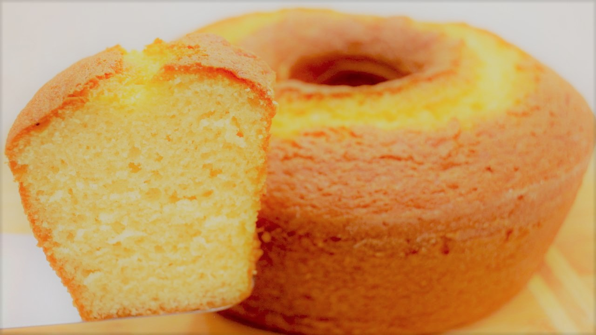

Caderno de receitas
Receita de bolo simples:

Igredientes:
- 1 xícara de açucar;
- 2 xícaras de farinha de trigo;
- 1 xícara de chocolate em pó;
- 1 xícara de óleo;
- 1 xícara de água;
- 1 colher de sopa de fermento em pó;
- 3 ovos.
Modo de preparo:
- Bata todos os igredientes no liquidificador menos o fermento;
- Unte uma forma;
- Coloque para assar em um forno pré aquecido em 180° durante 30 minutos.
Massa de panqueca

Igredientes
- 2 xícaras de farinha de trigo;
- 2 xícaras de leite;
- 3 ovos
- Pitada de sal
Modo de preparo:
- Bata todos os ingredientes no liquidificador por 2 minutos.
- Em seguida desligue e, com uma colher, misture a farinha que grudou no copo do liquidificador.
- Bata novamente só para misturar e reserve.
- Unte a frigideira com um fio de óleo e leve ao fogo até aquecer.
- Com o auxílio de uma concha, pegue uma porção de massa e coloque na frigideira, gire a
frigideira
para espalhar bem a massa.
- Abaixe o fogo e deixe dourar por baixo, em seguida vire do outro lado e deixe dourar, repita o
processo com toda a massa.
Macarrão com molho vermelho

Igredientes
- 1/2 pacote de macarrão de seu gosto
- 1 cebola pequena picada
- Pimenta-do-reino moída a seu gosto
- 1 colher de azeite de oliva extra virgem, ou azeite de seu gosto
- 3 tomates picados sem pele
- 1 colher de extrato de tomate
- 1 pacotinho de tempero em póvermelho
Modo de preparo:
- Coloque o macarrão em uma panela e cozinhe como de costume.
- Coloque 1 colher de azeite na panela em fogo alto e a cebola picada.
- Quando a cebola dourar, acrescente os tomates e mexa até que eles soltem água, depois disso,
acrescente 1 colher de extrato de tomate e a pimenta-do-reino moída.
- Mexa até misturar tudo e reserve.
- Escorra o macarrão, coloque-o em um refratário, acrescente o molho e misture.